真正的岛屿玩家，早已厌倦被社交媒体滤镜包裹的"网红"岛。我们向往的，是地图上未被标注的坐标，是通往世界尽头的 Wild Escape。
如果把毛里求斯当作印度洋旅行的终点，那你便错过了它身后更原始、更野性的姐妹——罗德里格斯岛。在这里，时间慢了下来，喧嚣被隔绝于大洋之外，只剩下火山、潟湖、洞穴，和一种近乎透明的宁静。
"野"并不意味着不舒适，而是一种与本真自然深度连接的奢华。接下来，用一场真实的岛屿假期，揭开这座隐世孤岛的面纱。
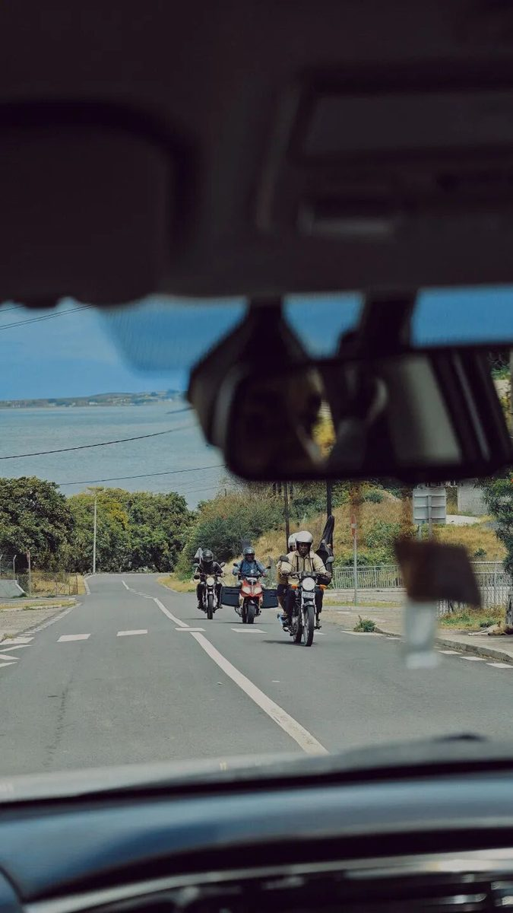
它在哪里，到底有多野
从毛里求斯主岛登上一路向东的航班，560 公里，1.5 小时，像一次精准的时空切换。飞机降落在珊瑚礁平原上的简易机场，扑面而来的是原始海风的气息。
一路驶过，沿途是散落的克里奥尔村庄、悠闲漫步的山羊群，土地保持着未经雕琢的质朴面貌，恍惚间仿佛闯入 30 年前的东南亚。即便是走遍全球的旅行达人，在小红书上也几乎找不到它的痕迹——罗德里格斯岛，像是印度洋刻意藏起来的秘密，只留给真正的硬核玩家。
这里的"银洞"（Trou D'Argent）被评选为世界保存最完好的海滩，也是风筝冲浪与一切冒险精神的理想归属。
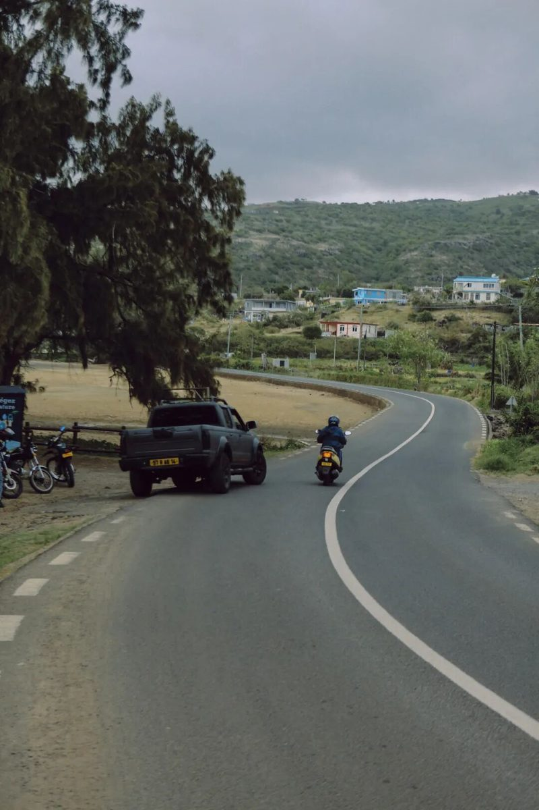
C Rodrigues：伏在莫鲁克湾的度假村
机场到度假村的道路蜿蜒于丘陵之间，C Rodrigues 就静候在路途的尽头。它不像许多海岛度假村那样炫耀夺目，而以粗粝而温暖的质感，谦逊地伏在莫鲁克湾的怀抱里：陶土色的墙面、红色覆顶的屋檐，仿佛从岛屿的火山土壤中自然生长出来。
它属于康斯丹酒店集团旗下的 C 度假村系列。没有绵延的高尔夫球场与奢华大堂，只有 65 间客房与两栋别墅散落在莫鲁克湾的礁石与椰林间，每一扇窗都直面印度洋最原始的浪涌。
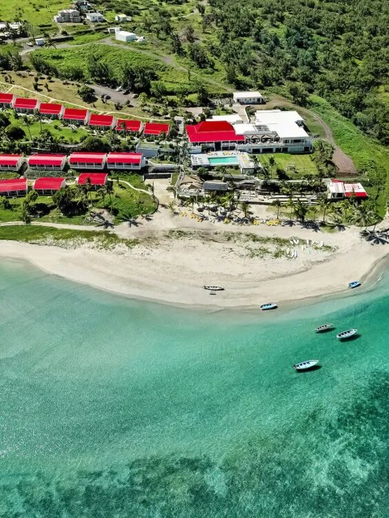
一间叫「海边小屋」的房间
若说醒来后无法第一眼望见大海，那海滩度假便失却了灵魂。我们入住的「豪华海滨房」Deluxe Beachfront 全度假村仅有 12 间——推开通往私人露台的玻璃门，印度洋的蓝毫无保留地涌入视野，海浪声成为永不间断的白噪音。
正如梅·萨顿在《海边小屋》里写的，独居海边的意义，在于与一种更浩瀚的节奏同步。晨起，咖啡的香气混着咸润的海风；日间，在露台的荫凉下读几页书；入夜，涛声为伴，仰望洒满星斗的天穹。
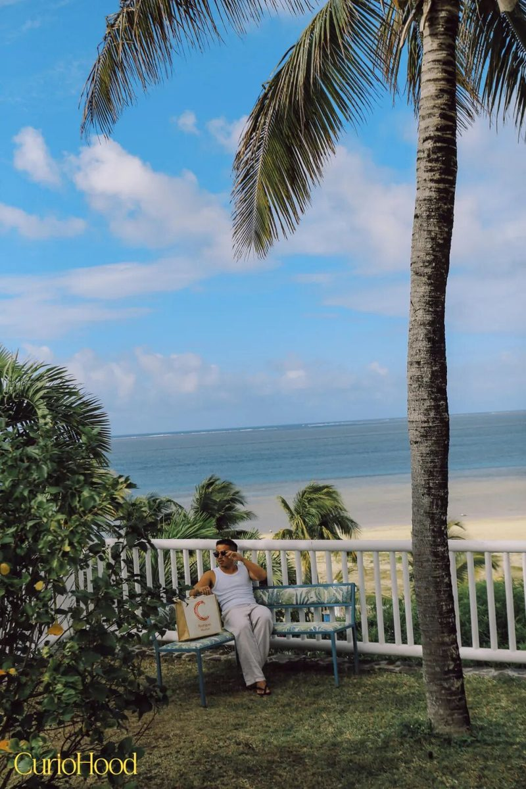
一栋和朋友的「海边别墅」
若是与一群志同道合的亲友同行，Beach Villa 四卧别墅是理想据点：安坐于沙滩最佳位置，推开门就是专属庭院，私人泳池与不远处的印度洋相互呼应。傍晚，烧烤区的炊烟与欢声笑语一同升起；入夜，每位成员退回自己的房间，在涛声包裹中入睡。
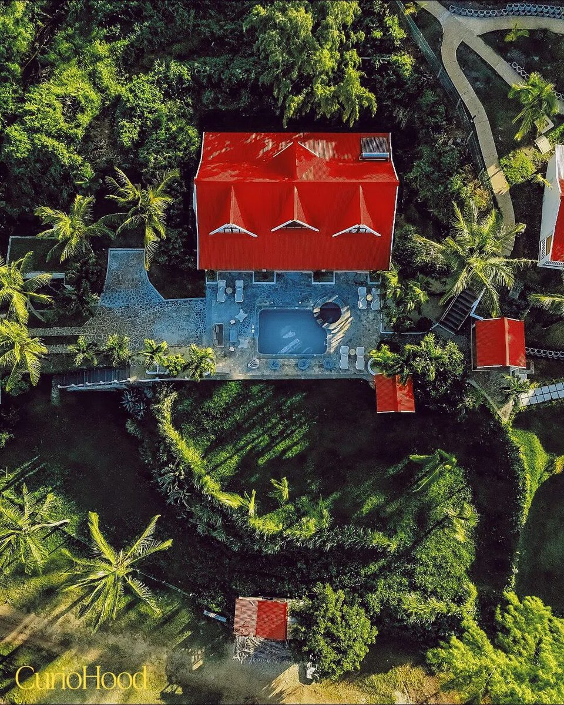
E 人的野性游乐场
要为罗德里格斯岛再加一个非来不可的理由，那一定是莫鲁克湾——被誉为全球十大风筝冲浪胜地的海域。C Rodrigues 在这片海边玩乐天堂里，为"E 人"准备了三种野玩法。
Kite Surfing · 在风之酒馆，做海的对手。 莫鲁克湾的风像被印度洋淬炼过的烈酒。租一副帆板，或报名一节课程，在专业教练的引导下直面海风的推力——身体与风缆角力，脚下是翡翠色的潟湖，远方是礁石击碎的白浪。玩家提示：建议 7 月前来，恰逢国际风筝冲浪节，整个海湾化身全球高手的竞技场。
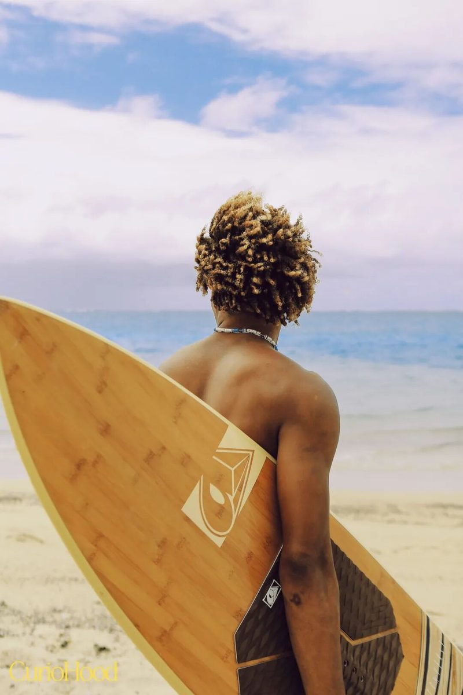
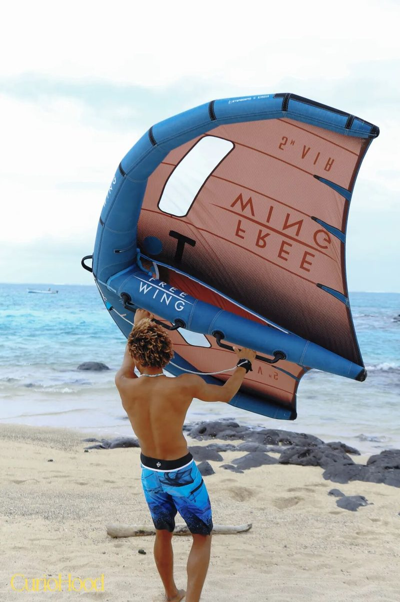
C Trek · 攀越火山，做一日野性玩家。 徒步利蒙山，398 米，路径原始陡峭，部分路段需要手脚并用。但登顶那一刻一切值得：360° 全景潟湖在脚下铺开，像站在印度洋的脊梁之上。
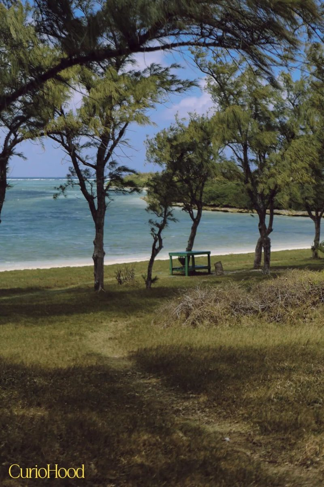
Crustacea · 荒岛浮潜，现烤海鲜。 清早随船夫坐蓝色木船出海，在海中央跳下，潜入 Riviere Banane 海洋保护区浮潜——水很浅，比主岛更纯粹。结束后船夫带你去附近的荒岛，在海岸边的炭火上直接炙烤海鲜，撒本地辣椒酱和莱姆汁，配一杯当地酒饮。
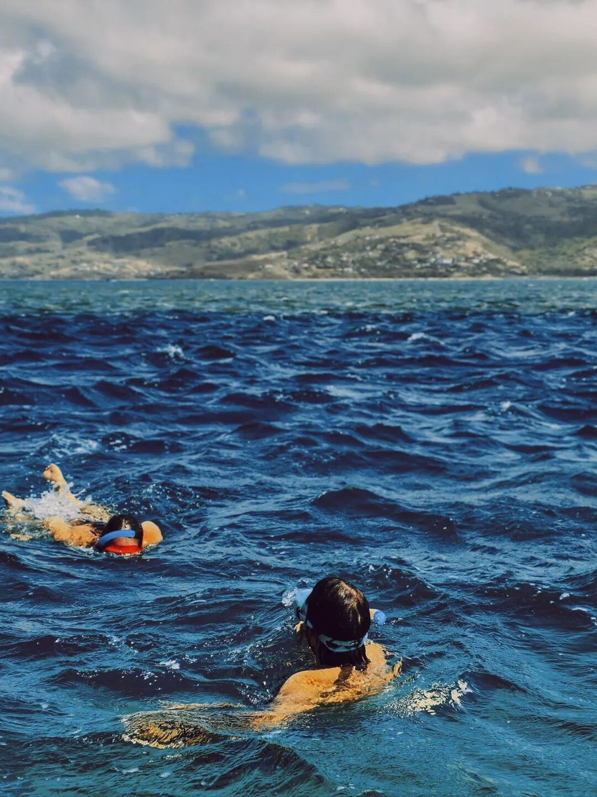
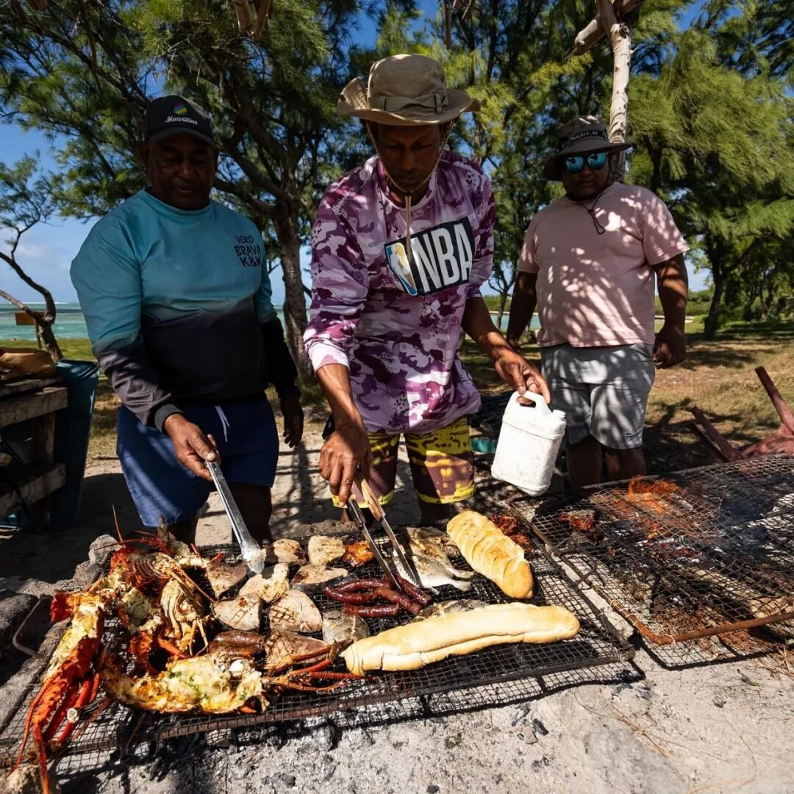
I 人的极致充电岛
野性之中，这座岛同样藏着一处为独处者准备的宁静频道。
上午，在 Beachfront 海景房或 Salty Crab 餐吧，占一个面向大海的"个人结界"：读书、发呆、看云影漫游，时间终于回归它本来的流速。午后泡进度假村的公共泳池，带一本书浸入清凉；想更野一点，可以预约渔船探访无人小岛。
傍晚归来，直接隐入私人露台，或去风帆餐厅选个临窗的位置，在浪声陪伴下吃一份疗愈晚餐。餐饮上，入住含早餐加晚餐，可以付费升级为三餐全包。
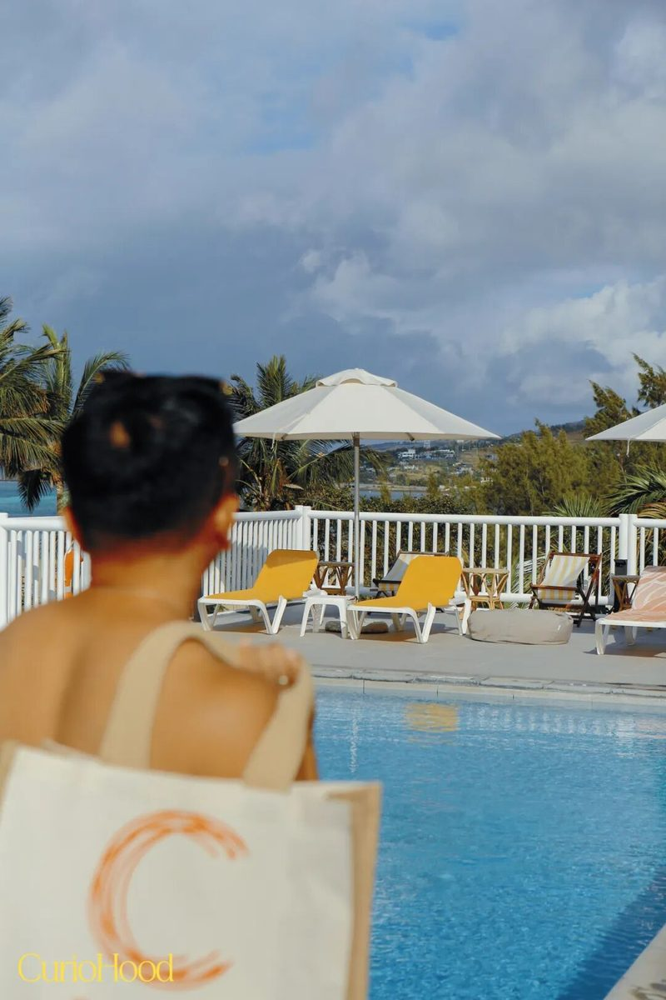
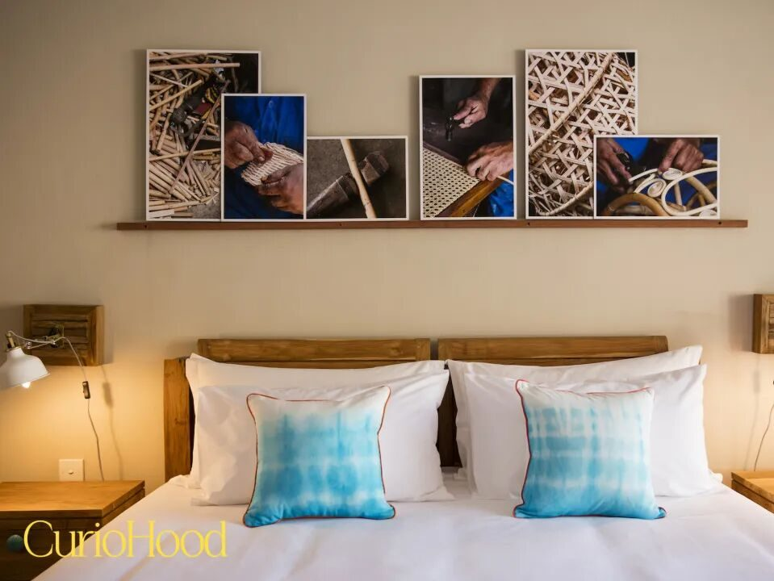
下一站，毛里求斯
若说 C Rodrigues 是一场回归野性的探索，那同集团的 C Mauritius 就是「毛里求斯无忧入门模式」：坐落西海岸塔玛琳湾，一价全包，把一切安排好，你只管放松。
从毛里求斯的热情乐章，到罗德里格斯的狂野附录，C Resorts 把"玩乐哲学"贯穿始终——让你重新拥有"像孩子一样尽情玩耍"的自由。若把毛里求斯比作印度洋的经典畅销书，罗德里格斯岛便是那本仅对少数人开放的珍藏孤本。
下一章，我们与康斯丹路上再见。
curiohood · Stay Curious
事实核对：本文改写自 CurioHood（公众号 BOYHOOD珀琥）2025 年 10 月 28 日《比毛里求斯更野，是抵达罗德里格斯岛》；岛屿距离（560 公里 / 1.5 小时航程）、银洞 Trou D'Argent、利蒙山 398 米、Riviere Banane 海洋保护区、C Rodrigues 65 间客房与 Deluxe Beachfront 12 间等信息均据原文。图片来自原文。